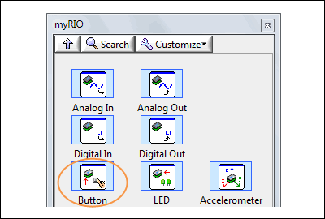
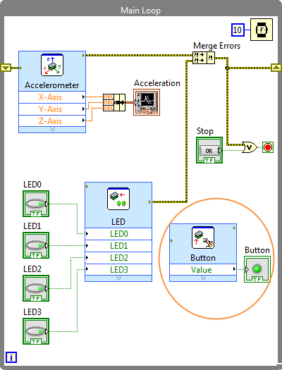
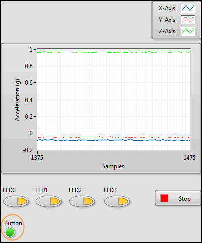

Part 4: Controlling the User Button
This part of the tutorial teaches you how to control the user button on the myRIO. Before starting this part, make sure you have completed the previous parts of the tutorial.
 |
|
 |
|
 |
|
Congratulations! You have successfully created a myRIO application that controls all the myRIO onboard devices. You're ready to get started with creating applications of your own.
The following are some resources that you might find helpful as you create your own applications:
- myRIO Toolkit Help—Provides conceptual information about myRIO programming in LabVIEW and reference information about the myRIO VIs. To access this help file, select Help»LabVIEW Help in LabVIEW and navigate to the myRIO Toolkit book.
- Templates and sample projects—Templates provide starting points for useful design patterns. Sample projects demonstrate working applications based on these templates. You can customize templates and sample projects according to your application needs. Select File»Create Project from LabVIEW to display the Create Project dialog box. Look for the templates and sample projects under the myRIO categories.
- Online Resources—Refer to ni.com/learn-myrio for videos and more tutorials about RIO programming.
 Previous
Previous